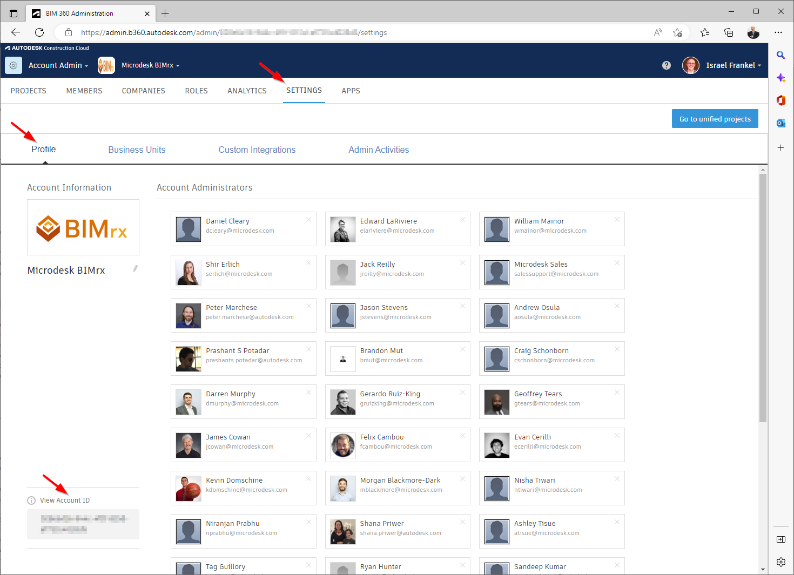
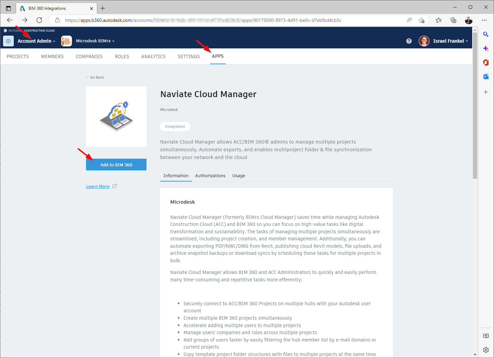
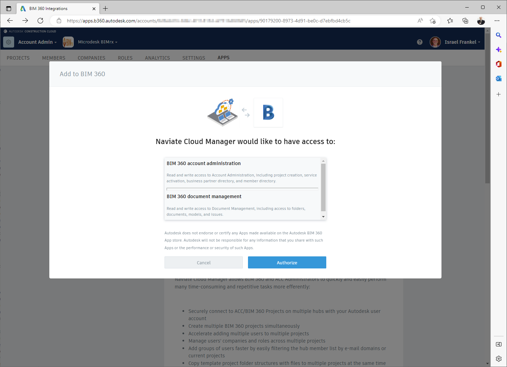
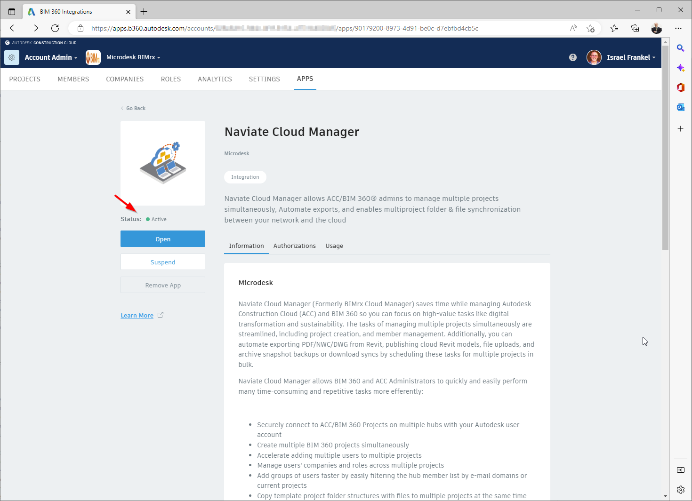
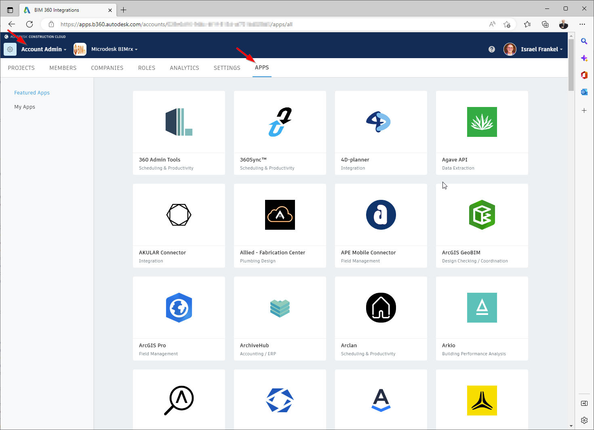
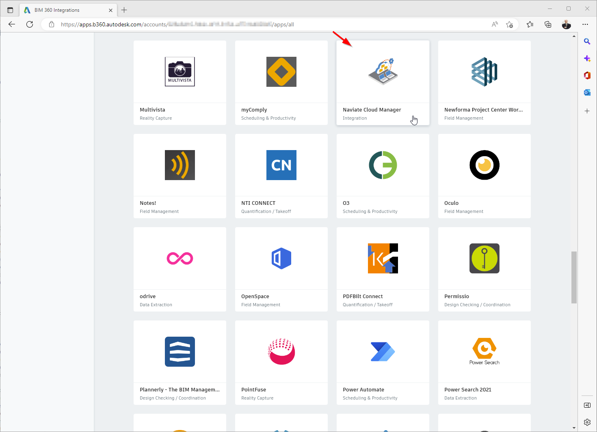

Add Naviate Cloud Manager to BIM360 Hubs
To access Naviate Cloud Manager it is necessary to first locate it on the BIM 360® Apps tab then Add it. Users retain the assigned service level by obtaining user access directly through an Autodesk® Account Login. This trusted integration simplifies project setup through granular folder and file permissions which allows for scheduling uploads, downloads, publishing and exporting of PDFs and NWCs.
The following describes the process for adding the App to the user's account, describing two different ways to access the Naviate Cloud Manager app. The end result is the same, however, and the user arrives at the same Naviate Cloud Manager app entry screen.
Important Note — You must have BIM 360® Account Admin access to perform the following procedure. If not, the following steps cannot be performed. If you don't have this level of access, you must either have Account Admin access granted to you or, alternatively, have someone with the necessary access perform the following steps.
Direct Access to Naviate App
This is the most simple and direct way to access the Naviate App. All that is necessary is to copy the following url and paste it into the address field of your we browser, and substitute the current hub id for the :account_id placeholder below.
https://apps.b360.autodesk.com/accounts/:account_id/apps/90179200-8973-4d91-be0c-d7ebfbd4cb5c
After substituting the actual account id for the :account_id placeholder, the url should look something like this:
https://apps.b360.autodesk.com/accounts/123abc-4d5e6f7-g88hh234ab-d4887596ee/apps/90179200-8973-4d91-be0c-d7ebfbd4cb5c
Please note the absence of a preceding "b." in the account id. Once the account id has been inserted into the url, press <Enter> to navigate to the Naviate App entry.
If you aren't sure what the account id is, it can be found on the following BIM 360® page:

Simply copy the Account ID shown at the lower left corner of the above screen, substitute it for the :account_id placeholder in the above url, press <Enter>, as described above, and the following screen will appear:

As shown at the top of the above screen, you must be logged in as an Account Admin and you should be located on the Apps tab. The next step is to press the Add to BIM 360 button, shown above, to go to the next screen.
Here, the Authorize screen appears:

The final step is to press the Authorize button.
After authorization, the Naviate Cloud Manager screen re-appears.

Now, however, the Naviate Cloud Manager App Status shows itself Active and ready to use.
Browse to Naviate App
An alternate way to navigate to the Naviate Cloud Manager App is to browse to it. This is done by performing the following steps:
Perform the following steps to add the Naviate Cloud Manager App, after logging into BIM 360®.
- Navigate to Account Admin
- With Account Admin selected, select the APPS tab

- The APPS tab shows an alphabetical list of the many posted apps. These apps perform many different functions together with BIM 360®.

Navigate down the apps tab until you reach Naviate Cloud Manager. Since it starts with the letter 'N' and will be a little more than half way down the list.
- Select Naviate Cloud Manager from the above screen. This places you in the same location provided by the direct access method, described in the preceding section. Just to recap:
From the Naviate Cloud Manager app screen,
Press the Add to BIM 360 button, shown above, to go to the next screen.
Next, the Authorize screen appears:
Press the Authorize button.
After authorization, the Naviate Cloud Manager screen re-appears.
The Naviate Cloud Manager App Status now shows Active and is ready to use.
Please Note — Custom Connections remain fully functional using a Forge App and Custom Integration definitions.